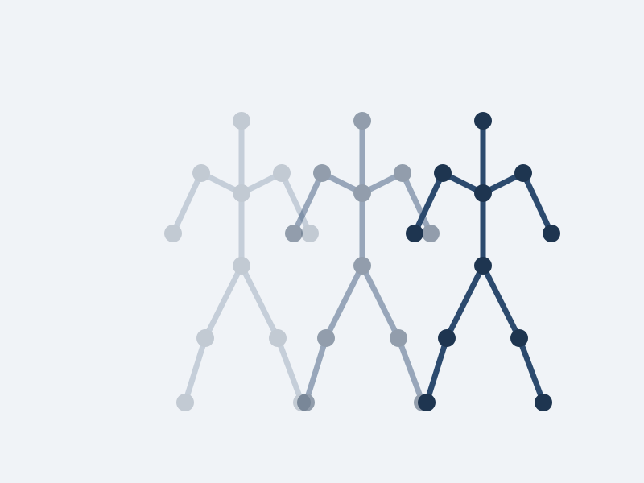

Computer vision in biomechanics
Gait Classification Using 2D Pose Estimation and Explainable AI
Can smartphone video distinguish healthy older adults from people with transfemoral amputation? This project used single-camera walking videos to classify gait patterns and identify clinically meaningful asymmetries.
A Random Forest model reached 96.2% accuracy, with SHAP explaining which variables contributed most to each prediction. The model’s assumptions and limitations were documented clearly.
Research highlights
- Clinically meaningful asymmetry measures used for classification
- 100% precision and 92% recall for amputee detection
- Three confidence zones: Green, Yellow, and Red
- SHAP plots for each participant
- Stride speed asymmetry identified as the strongest predictor
- Data assumptions and single-camera limitations documented under Pillar 1 of the RCAI framework